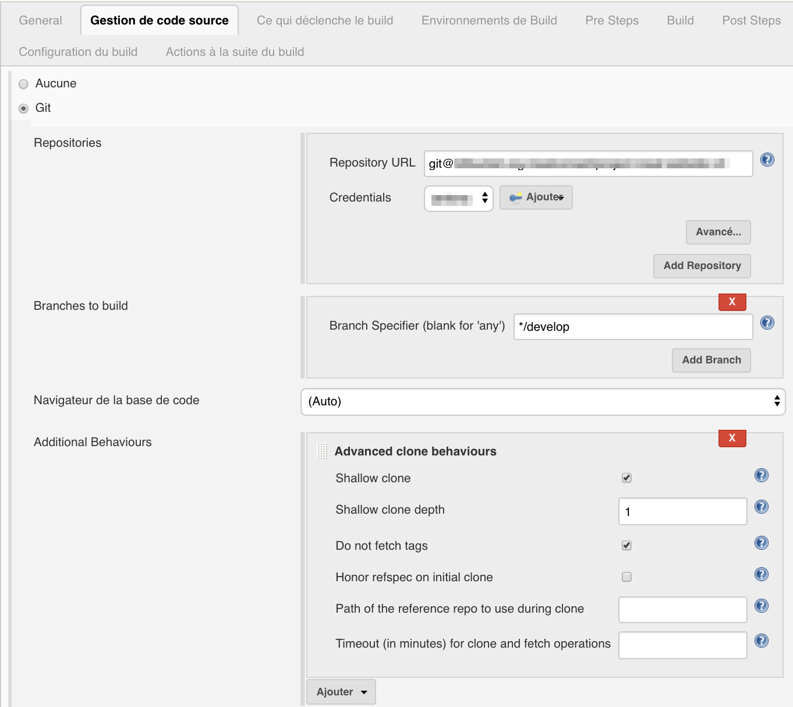
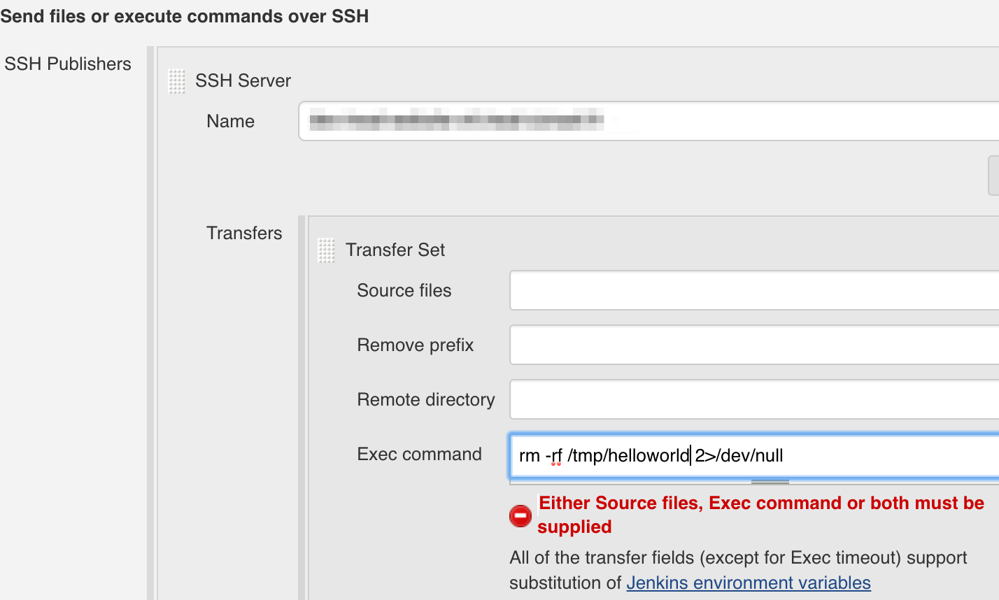

CI - PHP Maven project
How to do a CI for a PHP project
Tools: Jenkins, Maven, Nexus
Press 'Space' to continue
Press 'n' to show/hide notes
Press 's' for speaker mode
Introduction
The theory: read the article
Introduction - Tools
- Maven
- Jenkins
Maven - Intro
Apache Maven is a software project management and comprehension tool. Based on the concept of a project object model (POM), Maven can manage a project's build, reporting and documentation from a central piece of information.
Official website

Maven - Intro
- Made for java projects but highly adaptable
- Most of the project configuration is inside a pom.xml file inside the project
- Introduce a Build Lifecycle
Maven - Build Lifecycle
- validate - validate the project is correct and all necessary information is available
- compile - compile the source code of the project
- test - test the compiled source code using a suitable unit testing framework. These tests should not require the code be packaged or deployed
- package - take the compiled code and package it in its distributable format, such as a JAR.
- verify - run any checks on results of integration tests to ensure quality criteria are met
- install - install the package into the local repository, for use as a dependency in other projects locally
- deploy - done in the build environment, copies the final package to the remote repository for sharing with other developers and projects.
Jenkins - Intro
Build great things at any scale
The leading open source automation server, Jenkins provides hundreds of plugins to support building, deploying and automating any project.

Jenkins - Leaderboard
Pre-requisites
- A server for CI
- Jenkins, Maven and maybe other tools installed on this server
- A development server which will be the target of the deployed product
- (recommended) Maven installed on the current machine to create the package locally before making it on jenkins
Project configuration for CI
Remember the phases
Project configuration for CI - Phase 0
Init the project inside pom.xml
<?xml version="1.0" encoding="UTF-8"?>
<project xmlns="http://maven.apache.org/POM/4.0.0" xmlns:xsi="http://www.w3.org/2001/XMLSchema-instance" xsi:schemaLocation="http://maven.apache.org/POM/4.0.0 http://maven.apache.org/xsd/maven-4.0.0.xsd">
<modelVersion>4.0.0</modelVersion>
<groupId>com.fakeproject</groupId>
<artifactId>helloworld</artifactId>
<version>0.0.1-SNAPSHOT</version>
<name>Hello World</name>
<build>
</build>
</project>Project configuration for CI - Phase 1
SCM
Getting the code from SCM is a part of Jenkins' job. We will do that later.Project configuration for CI - Phase 2
Get the libs
Put all the commands you need to download libraries inside a shell script in the project. The script will be run before the compilation phase of Maven.
<build>
...
<plugins>
<plugin>
<artifactId>exec-maven-plugin</artifactId>
<groupId>org.codehaus.mojo</groupId>
<version>1.6.0</version>
<executions>
<execution>
<id>Prepare phase</id>
<phase>generate-sources</phase>
<goals>
<goal>exec</goal>
</goals>
<configuration>
<executable>${basedir}/scripts/prepare/prepare.sh</executable>
</configuration>
</execution>
</executions>
</plugin>
...Project configuration for CI - Phase 2'
Tells Maven where the sources are
As it is not a Java project, you have to tell Maven the sources location. We must exclude the Maven's working directory (aka target) and some files used or generated by Maven.
<build>
...
<resources>
<resource>
<directory>.</directory>
<excludes>
<exclude>target/**</exclude>
<exclude>pom.xml</exclude>
<exclude>pom.xml.releaseBackup</exclude>
<exclude>pom.xml.tag</exclude>
<exclude>release.properties</exclude>
</excludes>
</resource>
</resources>
...Project configuration for CI - Phase 3
The compilation
There are no real compilation in a PHP project. So, tell that to Maven
<plugin>
<groupId>org.apache.maven.plugins</groupId>
<artifactId>maven-compiler-plugin</artifactId>
<version>3.7.0</version>
<executions>
<execution>
<id>default-compile</id>
<phase>none</phase>
</execution>
</executions>
</plugin>
...Project configuration for CI - Phase 4
Tests
You can reuse the maven exec plugin to run a sell script in charge of running tests (like in phase 2 when getting the libs) or call a bash command. This is an example of running directly a bash command:
<execution>
<id>phpunit</id>
<phase>test</phase>
<configuration>
<executable>phpunit</executable>
<arguments>
<argument>--log-junit</argument>
<argument>${basedir}/target/results/phpunit/phpunit.xml</argument>
<argument>-c</argument>
<argument>${basedir}/phpunit.xml.dist</argument>
</arguments>
</configuration>
<goals>
<goal>exec</goal>
</goals>
</execution>
...
Project configuration for CI - Phase 5
Package: Make the rpm
Use the Maven rpm plugin which is plugged by default on the Maven's package phase.
Note: I won't describe how works a RPM. The only thing you you have to know is that a RPM is a kind of executable and one of its tasks is to move source code to a predefined destination (see the mapping tag).
<plugin>
<groupId>org.codehaus.mojo</groupId>
<artifactId>rpm-maven-plugin</artifactId>
<version>2.1.5</version>
<extensions>true</extensions>
<executions>
<execution>
<id>generate-rpm</id>
<goals>
<goal>rpm</goal>
</goals>
</execution>
</executions>
<configuration>
<license>MIT</license>
<distribution>DISTRIBUTION</distribution>
<group>benjdum59</group>
<packager>benjdum59</packager>
<defineStatements>
<defineStatement>_unpackaged_files_terminate_build 0</defineStatement>
<defineStatement>_binaries_in_noarch_packages_terminate_build 0</defineStatement>
</defineStatements>
<mappings>
<mapping>
<directory>/var/www/${project.artifactId}</directory>
<filemode>755</filemode>
<username>apache</username>
<groupname>apache</groupname>
<configuration>noreplace</configuration>
<directoryIncluded>true</directoryIncluded>
<sources>
<source>
<location>target/classes</location>
</source>
</sources>
</mapping>
</mappings>
</configuration>
</plugin>Project configuration for CI - Phase 5'
Package: Make the rpm - post installation
RPM can run scripts before and after the installation. Create a post-install script containing all you need (e.g.: Clear cache, database migration...). As scripts may differ for a development and a production environment, you may use different scripts and call the one you need using the environment variable.
<project xmlns="http://maven.apache.org/POM/4.0.0" xmlns:xsi="http://www.w3.org/2001/XMLSchema-instance" xsi:schemaLocation="http://maven.apache.org/POM/4.0.0 http://maven.apache.org/xsd/maven-4.0.0.xsd">
...
<packaging>rpm</packaging>
<properties>
<project.build.sourceEncoding>UTF-8</project.build.sourceEncoding>
<environment>stg</environment>
</properties>
...
<!-- RPM Part -->
</mappings>
<postinstallScriptlet>
<scriptFile>./scripts/post-install/post-install-${environment}.sh</scriptFile>
<fileEncoding>utf-8</fileEncoding>
</postinstallScriptlet>
</configuration>Project configuration for CI
Test your package generation
Default value of environment is "stg" (from the example).
mvn clean package
#OR
mvn clean package -Denvironement=stg #does the same thing
#OR
mvn clean package -Denvironment=prod
#make sure you have ./scripts/post-install/post-install-prod.sh file
Project configuration for CI
Intermediate phase: send rpm to a product browser
Nexus is a great tool for product storage and is well plugged with Maven.
You have to set the repository informations (url, authentication) in the settings.xml file (in Maven installation or homeDirectory/.m2) and configure the project to use this repository.
Project configuration for CI
Intermediate phase: send rpm to a product browser
settings.xml
<?xml version="1.0"?>
<settings>
<profiles>
<profile>
<id>myprofile</id>
<repositories>
<repository>
<id>private-snapshot</id>
<url>https://nexus.host.fr/nexus/content/repositories/private-snapshot/</url>
<releases>
<enabled>false</enabled>
</releases>
<snapshots>
<enabled>true</enabled>
</snapshots>
</repository>
</repositories>
</profile>
</profiles>
<activeProfiles>
<activeProfile>myprofile</activeProfile>
</activeProfiles>
<servers>
<server>
<id>private-snapshot</id>
<username>benjdum59</username>
<password>password</password>
</server>
</servers>
</settings>Project configuration for CI
Intermediate phase: send rpm to a product browser
pom.xml
</build>
<profiles>
<profile>
<id>default</id>
<activation>
<activeByDefault>true</activeByDefault>
</activation>
<distributionManagement>
<repository>
<id>private-releases</id>
<url>https://nexus.host.fr/nexus/content/repositories/private-release/</url>
</repository>
<snapshotRepository>
<id>private-snapshots</id>
<url>https://nexus.host.fr/nexus/content/repositories/private-snapshot</url>
</snapshotRepository>
</distributionManagement>
</profile>
</profiles>Project configuration for CI
Intermediate phase: send rpm to a product browser
Upload rpm
mvn clean deploy -Denvironment="stg"Note: All Maven phases will be run (compile, test, package) before deploy.
Project configuration for CI
Phase 6 - Deploy the product on a development environment
This part is done with Jenkins. We will see it later.
End of Project configuration
Jenkins configuration - New job
Create a new Maven job
Jenkins configuration - Configure development environment for Jenkins
Install plugin "Publish Over SSH" and configure the development server to accept jenkins' public ssh key
Jenkins configuration - Configure SCM in job
Jenkins configuration - Trigger build
Jenkins configuration - jenkins-delete-workspace
Delete workspace to be sure everything is clean!
Jenkins configuration - Pre-build steps 2
Clean product in development environment if possible
Jenkins configuration - Build step
Invoke Maven package or deploy phase.
Jenkins configuration - Post Build step
Deploy phase: send rpm to server and install it
CI should work!
Make a release
Remember...

Only 2 phases to implement: tag and archive
Release with Maven
mvn clean release:prepare
mvn clean release:perform
mvn release:prepare
Preparing a release goes through the following release phases:
mvn release:perform
Performing a release runs the following release phases:
Configure pom.xml for release
Tells Maven the SCM configuration
...
<scm>
<url>https://github.org/benjdum59/helloworld.git</url>
<connection>scm:git:ssh://git@github.org/benjdum59/helloworld.git</connection>
<developerConnection>scm:git:ssh://git@github.org/benjdum59/helloworld.git</developerConnection>
</scm>And add your Nexus repository informations in distributionManagement tag (pom.xml) and in settings.xml
Jenkins configuration - Maven Release Plugin
Install Maven Release Plugin. Now you can configure the job for release in Build environment section
Jenkins configuration - SCM
Jenkins checkouts git repositories in detached mode. In order to be able to commit a tag, you have to be in attached mode.
How to make a release with Jenkins
Click on Perform Maven Release and fill the form.